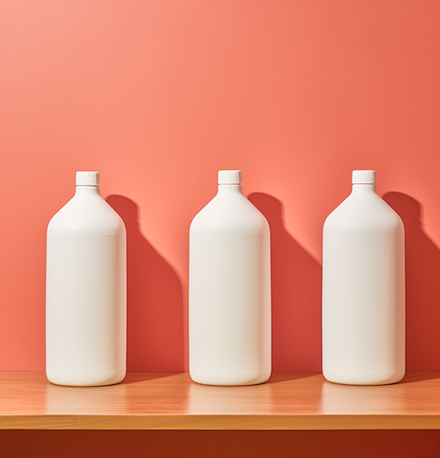
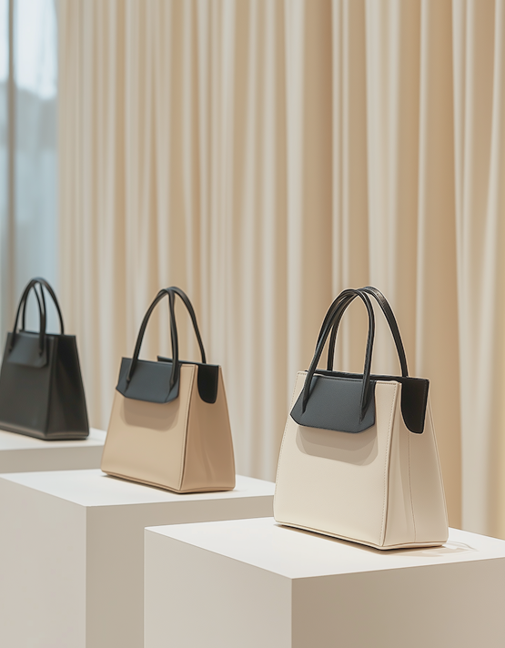
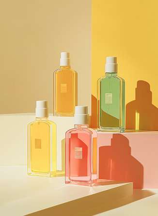
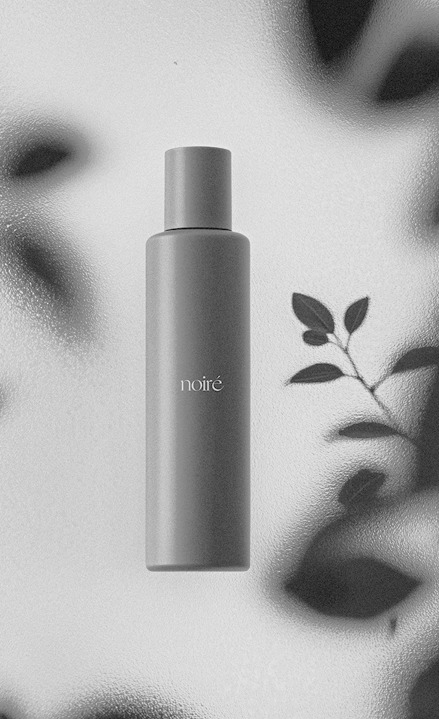
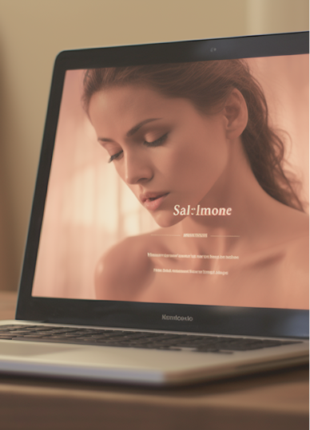
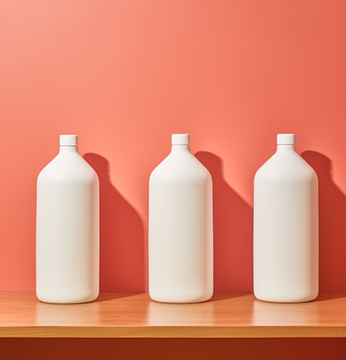
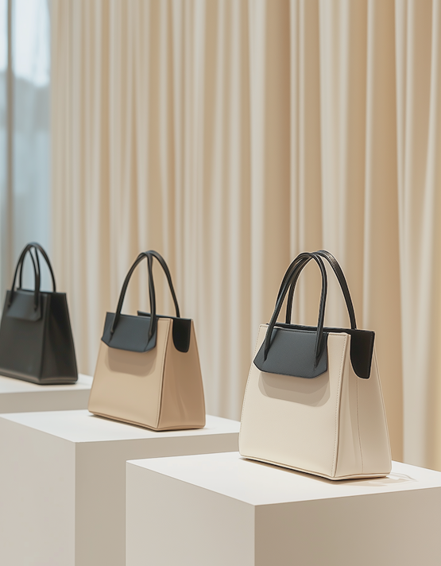
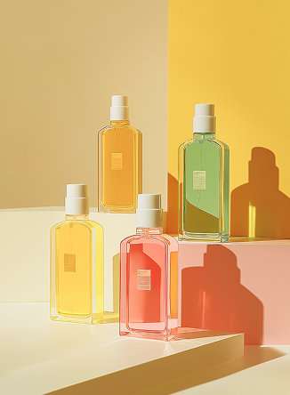
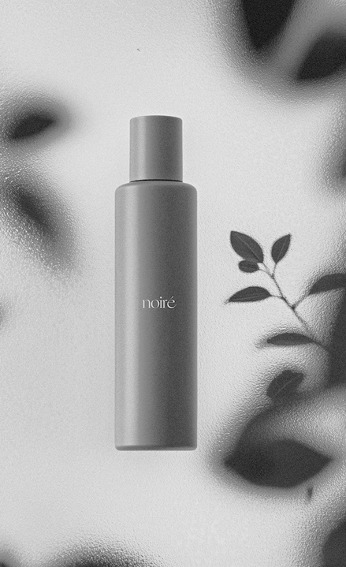
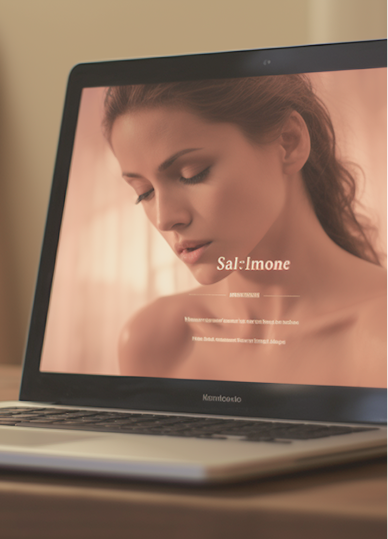

как влияет
цвет на выбор
потребителя
Цвет — это не просто приятное дополнение к визуальной информации; это мощный инструмент, который оказывает значительное влияние на наше восприятие, эмоции и, как следствие, на решения о покупке. В мире, где потребителей ежедневно заваливают рекламные сообщения, понимание психологии цвета становится ключевым фактором успеха для брендов.
Цвет как якорь эмоций:
Каждый цвет вызывает определённый набор ассоциаций и эмоций, например:
Влияние на подсознательном уровне:
Большинство потребителей не осознают, как цвет влияет на их решения. Исследования показывают, что цвет может влиять на многие факторы:
Цвет в разных каналах коммуникации:
Влияние цвета проявляется во всех сферах маркетинга:
Локальные и культурные особенности:
Важно помнить, что восприятие цвета может сильно различаться в разных культурах. Например, белый цвет в западной культуре ассоциируется с чистотой и невинностью, а в некоторых восточных культурах — с трауром. Поэтому, при выходе на международный рынок, необходимо учитывать культурные особенности и адаптировать цветовую гамму бренда к местным предпочтениям.
В заключение, цвет — это мощный инструмент влияния на потребителя, который требует глубокого понимания и осознанного использования. При эффективном применении этот выбор цвета может создать долгосрочную лояльность и эмоциональное взаимодействие.
Узнали ли вы что-то новое?
 15
15
Вам может быть интересно
cезонные цветовые стратегии
5
 #маркетинг
#маркетинг
цвет – двигатель продаж: психология цвета в действии
8
 









комментарии
0